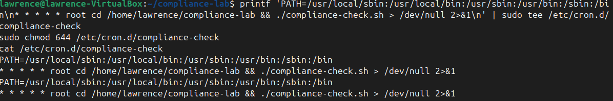
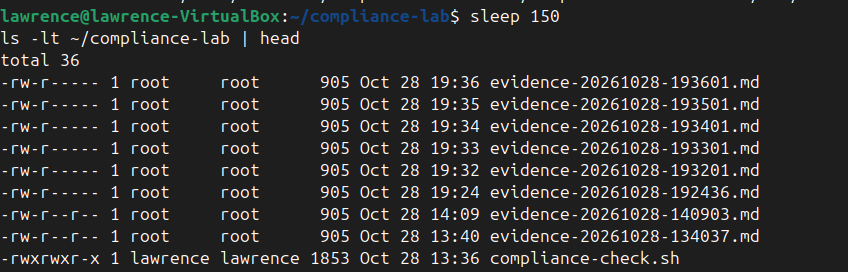
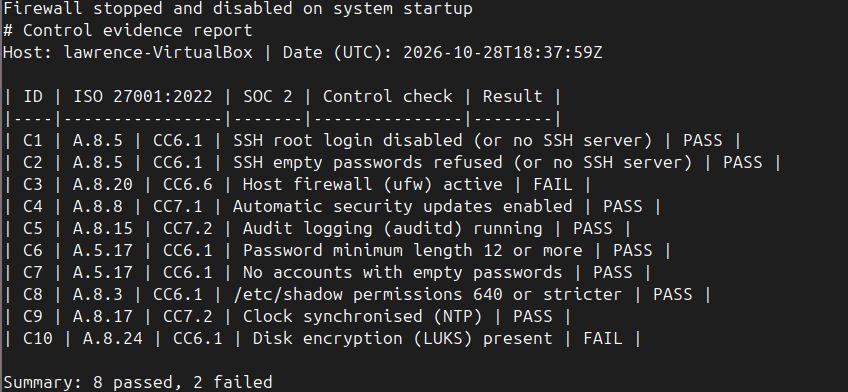
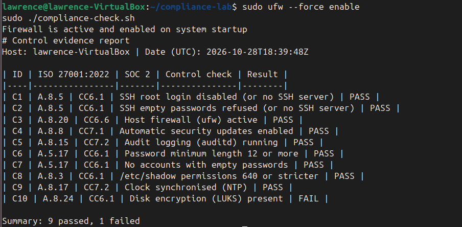

Summary
SOC 2 and ISO 27001 both ask an organisation to show, with evidence, that its security controls exist and keep working. A policy document does not do that. Evidence that was produced automatically, on a schedule, with a timestamp, does. This case turns that idea into a small working system on one Ubuntu machine: ten controls, each mapped to an ISO 27001:2022 Annex A control and a SOC 2 criterion; a Bash script that checks every one and writes a dated evidence report; a first run that exposed failures; fixes; a schedule so the check repeats by itself; and a deliberate change to prove the check catches drift.
Results: the script went from 5 of 10 controls passing to 9 of 10, and the Lynis hardening index went from 57 to 59 to 62. The one remaining failure, disk encryption, is documented as an accepted risk with a reason.
Scope and honest limits
- This is a single Ubuntu virtual machine. It is mapped to SOC 2 and ISO 27001 controls; it is not "compliant with" either. Real certification covers an organisation's people, processes and policies, and is judged by an auditor.
- The ten checks cover a small, representative slice of the controls named below, not the full SOC 2 Trust Services Criteria or all of Annex A.
- A passing check shows a setting is in place at that moment. It does not prove the control is effective in every way (see the findings on updates below).
The control matrix
Each row ties one technical check to the standards. The IDs are the ones the script prints in its evidence report.
| ID | Check | ISO 27001:2022 | SOC 2 |
|---|---|---|---|
| C1 | SSH root login disabled (or no SSH server) | A.8.5 | CC6.1 |
| C2 | SSH empty passwords refused (or no SSH server) | A.8.5 | CC6.1 |
| C3 | Host firewall (ufw) active | A.8.20 | CC6.6 |
| C4 | Automatic security updates enabled | A.8.8 | CC7.1 |
| C5 | Audit logging (auditd) running | A.8.15 | CC7.2 |
| C6 | Password minimum length 12 or more | A.5.17 | CC6.1 |
| C7 | No accounts with empty passwords | A.5.17 | CC6.1 |
| C8 | /etc/shadow permissions 640 or stricter | A.8.3 | CC6.1 |
| C9 | Clock synchronised (NTP) | A.8.17 | CC7.2 |
| C10 | Disk encryption (LUKS) present | A.8.24 | CC6.1 |
How the script works: each check is one line that runs a command and records PASS if the command succeeds and FAIL if it does not. It prints a Markdown table and saves it to a file named with the date and time, so every run leaves its own evidence file. The script must be run with sudo because some checks read protected files such as /etc/shadow.
Phase 1: Baseline
The first run, on a freshly installed machine, passed 5 of 10. The five failures were the host firewall (C3), audit logging (C5), password minimum length (C6), clock synchronisation (C9) and disk encryption (C10). A separate Lynis audit gave a hardening index of 57.
Phase 2: Remediation
I fixed four of the five failures: enabled the ufw firewall, installed and started auditd, set a password minimum length of 12 in the password-quality settings, and turned on network time synchronisation. The script then passed 9 of 10 and Lynis rose to 59.
A second round went after Lynis suggestions that were cheap and safe to apply: a stricter default file-permission mask (UMASK 027), disabling core dumps through /etc/security/limits.conf, and installing needrestart. Lynis rose to 62 out of 252 tests performed. The umask change is visible in the evidence files themselves: the two oldest reports are readable by any user on the machine, while reports created after the change are readable only by their owner and group.
Phase 3: Making it continuous
A one-off check is a snapshot. To make it continuous, I scheduled the script with cron, Ubuntu's built-in job scheduler, as a file in /etc/cron.d/. To prove the schedule works I first set it to run every minute, then waited. New evidence files appeared on their own, with timestamps one minute apart and no action from me.

ufw.
For a real deployment the every-minute schedule is far too frequent; a weekly or daily run is more sensible. The every-minute setting was a test, not a recommendation.
Phase 4: Testing for drift
Drift is when a control that was once in place quietly stops being true: someone disables a firewall to troubleshoot and forgets to turn it back on. A monitoring script is only worth having if it notices. To test that, I turned the firewall off with sudo ufw disable and re-ran the script.

I then re-enabled the firewall and re-ran the script, which returned to 9 passed and 1 failed. The two evidence reports, one failing and one passing, are a before-and-after record of a control breaking and being restored.

One limit: in this lab nothing alerts a person when a check fails. The failure is written to the evidence file. A production setup would send a notification when a run contains a FAIL.
Accepted risks and findings
Disk encryption (C10) left failing, on purpose. The machine is a throwaway virtual machine that holds no real data, and encrypting a disk that is already installed is not practical without reinstalling. In a real environment this would be an accepted risk only if a risk owner signed it off, or the fix would be to enable encryption at install time. A failing check with a written reason is more honest than a check that is quietly removed.
Other Lynis suggestions deliberately skipped: a boot-loader password, separate disk partitions, USB storage restrictions, disabling rarely used network protocols, and an intrusion-prevention tool such as fail2ban. These add effort without much benefit on an isolated lab machine, and a real system would decide on each one against its own risks.
Finding: a control switched on is not the same as a control effective. Check C4 passes, because automatic security updates are enabled. Yet the machine still reported hundreds of packages not upgraded, and needrestart listed services still running older library versions. The check answers "is the setting on?" and not "is the machine actually up to date?". A stronger check would count outstanding security updates. I left the updates alone in the lab to save data, and noted it here.
Lessons learned
The most useful result was the gap between a setting and its effect. A script can confirm that automatic updates are enabled while the machine remains behind on patches, so each check needs to be written to test the outcome that matters and not only the switch. The second lesson is that evidence has to be trustworthy: reports were first readable by every user, and tightening the default permissions fixed that. The third is that mapping makes the work legible to others. When each check carries an ISO 27001 and SOC 2 reference, a failed line reads as "this control failed", which is how an auditor or a manager thinks, and not as a stray technical error.